![ye grid sheet with 100 squares of 10 rows and 10 columns a pink shaded equilateral triangle ye B C is drawn, the point C lies on the 6th square of eighth row, ye lies on the on the centre meets at fifth column vertical line and the fifth row horizontal line and the point B lies on the fourth square of seventh row. a blue shaded equilateral triangle ye'B'C' is drawn, the point C' lies on the 6th square of fourth row, ye' lies on the centre meets at second square of fifth column vertical line and the point B' lies on the fourth square of third row.](images/image-148.png)
1) 1)
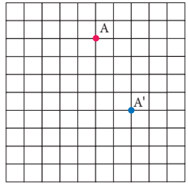
2)
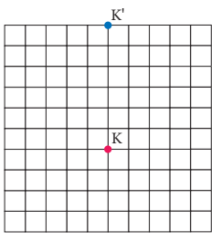
3)
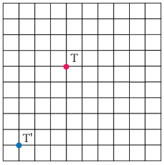
4)
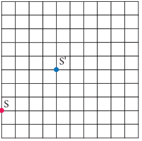
2)
1) 3 right side movement, 4 upward movement
2) 3 left side movement, 3 upward movement
3) 4 left side movement, 4 downward movement
4) 2 right side movement, 2 downward movement
3) 1)
2)
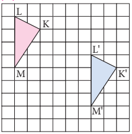
3)

4)

4) 1)
![A grid sheet with 100 squares of 10 rows and 10 columns A line of reflection is drawn on the 4th line horizontally and a pink shaded hexagon ABCDEF .A lies on the third square of third row , B on the sixth square of third row, C on the seventh square of second row , D on the sixth square of second row, .E on the third square of second row, and F lies on the second square of second row a blue shaded hexagon ye'B'C'D'E'F' .ye' lies on the third square of sixth row,, B' on the sixth square of sixth row, C' on the seventh square of seventh row , D' on sixth square of eighth row, , .E' on the third square of eighth row, and 'F' lies on the second square of seventh row](images/image-152.png)
2)
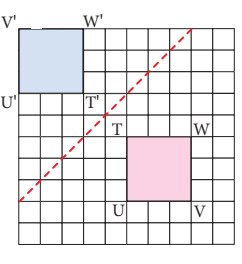
3)
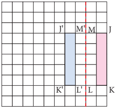
4)
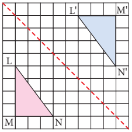
5)
![A grid sheet with 100 squares of 10 rows and 10 columns A line of reflection is drawn on the 7th line horizontally and a pink shaded Quadrilateral PQRSTU .P lies on the third square of fifth row , Q on the fourth square of sixth row, R on the ninth square of sixth row , S on the eighth square of fifth row, .T on the ninth square of fourth row, and U lies on the fourth square of fourth row a blue shaded Quadrilateral P'Q'R'S'T'U' .P' lies on the third square of ninth row , Q' on the fourth square of eighth row, R' on the ninth square of eighth row , S' on the eighth square of ninth row, .T' on the ninth square of tenth row, and U' lies on the fourth square of tenth row](images/image-156.png)
6)
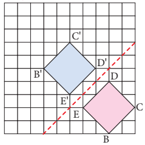
5) 1)
![in the first row there is only one square in the first row , there are two squares in the second row in which pink dot is present the square of the second column and the third row has only one square in the first column and a vertical reflection line is given in the side of the figure. in the opposite side, there is only one square in the first row of second column, there are two squares in the second row in which pink dot is present the square of the first column and the third row has only one square in the second column](images/image-158.png)
2)

3)
![in the first row there are two squares in the second and third column, in which pink dot is present in the square in the third column there are two squares in the first and the second column of the second row and the third row has only one square the first column and a slanting reflection line is along the figure. in slanting opposite side the first row there is only one square in the third column, in which pink dot is present in the square there are two squares in the second and third column of the second row and the third row has two squares the first and second column](images/image-160.png)
6) 1)
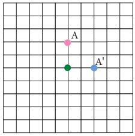
2)
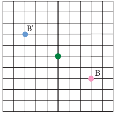
3)
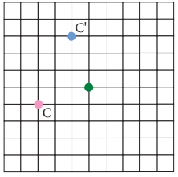
4)
![ye grid sheet with 100 squares of 10 rows and 10 columns ye green dot is marked on the centre where 5th vertical and 5th horizontal line meets and a pink shaded equilateral triangle ye B C is drawn in which the point ye Lies on eighth square of fifth row, B lies on ninth square of fifth row and C lies on the line joining 8th and 9th square of third row. a pink shaded equilateral triangle ye'B'C' is drawn in which the point ye' Lies on fifth square of third row, B' lies on fifth square of second row and C' lies on the line joining fourth square of second and third row.](images/image-164.png)
5)
![ye grid sheet with 100 squares of 10 rows and 10 columns ye green dot is marked on the centre where 5th vertical and 5th horizontal line meets and a pink shaded square ye B C D is drawn in which the point ye Lies on fourth square of third row, B lies on fourth square of second row , C lies on the line joining third square of third row. and D lies on third square of second row a blue shaded square ye. 'B'C'D' is drawn in which the point ye' Lies on eighth square of fourth row, B' lies on ninth square of fourth row , C' lies on the line joining ninth square of third row. and D' lies on eighth square of third row](images/image-165.png)
6)
![ye grid sheet with 100 squares of 10 rows and 10 columns ye green dot is marked on the centre where 5th vertical and 5th horizontal line meets and a pink shaded trapezium ye B C D is drawn in which the point ye Lies on the midpoint of sixth square of seventh row, B lies on the midpoint of fifth square of seventh row , C lies on the line joining fifth square of eighth row. and D lies on sixth square of eighth row a blue shaded trapezium ye'B'C'D' is drawn in which the point ye' Lies on the midpoint of fifth square of seventh row, B' lies on the midpoint of sixth square of fifth row , C' lies on the line joining sixth square of third row. and D' lies on fifth square of third row](images/image-166.png)
7) Reflection
8) Rotation
9) Translation
10)
1) 7 right side movement, 2 downward movement
2) No. it will be landed on the island.
3) 5 right side movement 3 downward movement
11)
1) Translation
2) Reflection about horizontal line
3) Reflection about vertical line
4) Rotation about the heel
12) 1)
Image of angle L is angle L dash; Image of angle M is angle M dash;
Image of angle N is angle N dash; Image of angle O is angle O dash;
Image of vertex L is angle L dash; Image of vertex M is angle M dash;
Image of vertex N is angle N dash; Image of vertex O is angle O dash;
2) Corresponding sides are L M and L dash M dash ; M N and M dash N dash; N O and N dash O dash ; O L and O dash L dash
13) 3 right side movement, 1 downward movement
Objective type questions
14) 2) Rotation
15) 3) Reflection
16) 1) Translation
17) 2) Rotation
18) 1) Translation
19) 3)
Miscellaneous Problems
1) For first move: 2 right side movement, 2 downward movement; For second move: 5 left side movement, 5 downward movement
2) Pawn 1 upward movement or 2 upward movement
Rook 1 to 8 upward movement
Knight 2 right side movement, 1 upward movement or 2 left side movement, 1 upward movement or 1 right side movement, 2 upward movement or 1 left side movement, 2 upward movement
Bishop 1 right side movement, 1 upward movement or 2 right side movement, 2 upward movement or 3 right side movement, 3 upward movement or 4 right side movement, 4 upward movement or 5 right side movement, 5 upward movement or 1 left side movement, 1 upward movement or 2 left side movement, 2 upward movement or 3 left side movement, 3 upward movement or 4 left side movement, 4 upward movement or 5 left side movement, 5 upward movement
Queen 1 to 8 upward movement, 1 right side movement, 1 upward movement or 2 right side movement, 2 upward movement or 3 right side movement, 3 upward movement or 4 right side movement, 4 upward movement or 5 right side movement, 5 upward movement or 1 left side movement, 1 upward movement or 2 left side movement, 2 upward movement or 3 left side movement, 3 upward movement or 4 left side movement, 4 upward movement or 5 left side movement, 5 upward movement
King 1 right side movement or left side movement or upward movement
3)
1) More brains category shows translation
2) More brains category shows reflection
4)
1) 120 Centimetre right side movement, 210 Centimetre downward movement
2) 270 Centimetre left side movement, 330 Centimetre upward movement
3) 150 Centimetre right side movement
5)
1) Rotation
2) Reflection
3) Translation
4) Reflection
5) Rotation
6) Reflection
7) Rotation
8) Translation
Challenge Problems
6) 2 left side movement, 1 downward movement and then 1 left side movement, 2 downward movement (or) 2 left side movement, 1 downward movement and then 1 left side movement, 2 downward movement
7) 1) Translation 3 left side movement 5 upward movement and 90 degree counter clockwise rotation about the green point and translate 5 left side movement, 2 downward movement
2) Translation 2 left side movement 90 degree counter clockwise rotation about the green point and translates 2 left side movement, 2 downward movement
8)
1)

2)
![A 12 dots in 7 rows is given in the dotted sheet . a shape of black shaded triangle is drawn joining the dots in 5th dot in first row and seventh row , 4th and 5th dot in second row and sixth row , 3rd and 5th dot in third row and fifth row second dot and fifth dot in fourth row respectively. ye shape of red shaded triangle is drawn joining the dots in 8th dot in first row and seventh row , 8th and 9th dot in second row and sixth row , 8th and 10th dot in third row and fifth row eighth and eleventh dot in fourth row respectively.](images/image-169.png)
3)
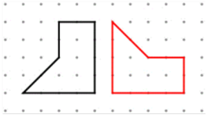